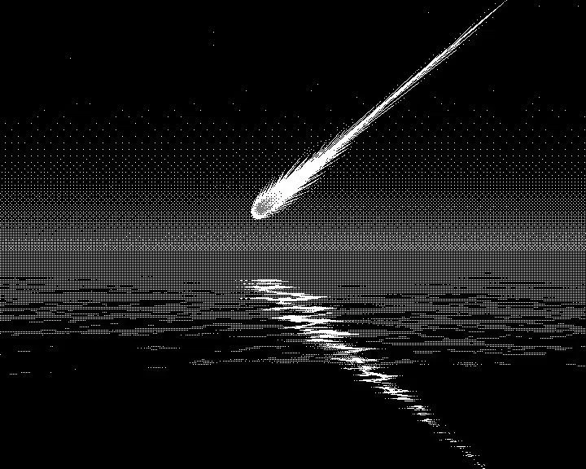

I never once believed I would survive past the age of 18. As for most of my life I idolized, romanticized, or otherwise had an ideation for suicide and my own Death. It's a stark contrast to me now; clinging to life, with divine purpose. Oh how the Vultures have changed me for the better! Those people in 2022-2025 who tried their best to get me to commit suicide, will no longer have a place in my life. They were in their 40s, 50s, and some family members younger than me... Southern Pride at its best! Or maybe it's Christian pride? Who knows... They often intertwine. Christianity will forever be a stain on human history. And I will forever hate it for the abuse it spawns in people under the guise of "Being Holy". These people targeted me for I did not wear performative masks, idolize a symbol of death (The Cross), or listened to their music. Even my own "Brother" who is younger than me, commented on a breakdown of mine: "You only hear the voice of Satan"... How archaic these people are... In this breakdown in 2023, I heard whispering, as is typical with BPD/Bipolar Mania auditory hallucinations during extreme stress (I was extremely stressed!). And my own brother projected his socialized Malice onto me, for not being "normal", and for being "different" and "mentally ill" (He and the other vultures are ones to believe it's all made up)... I just need to get out of the south... It is soul crushing. It doesnt help that my online "friends" also joined together to target & gossip about me, cool... Yeah I could go on about that too, but I really don't care anymore. I must strive for MY OWN future, not theirs.
